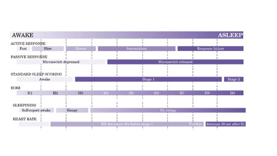
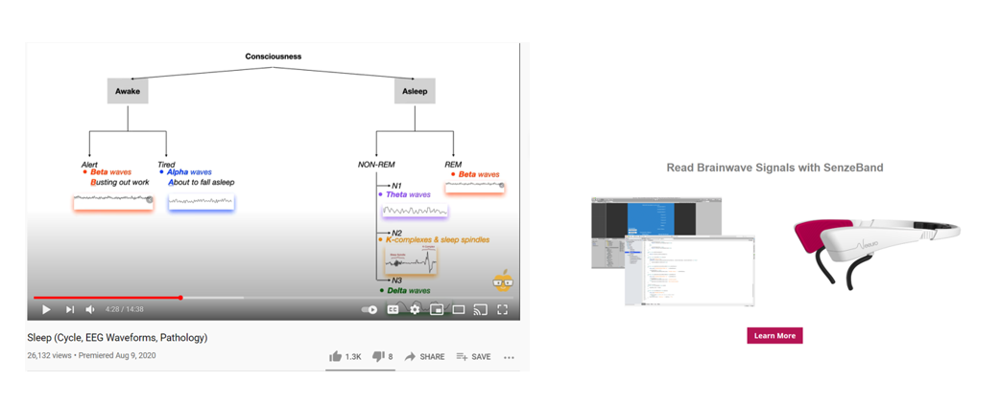
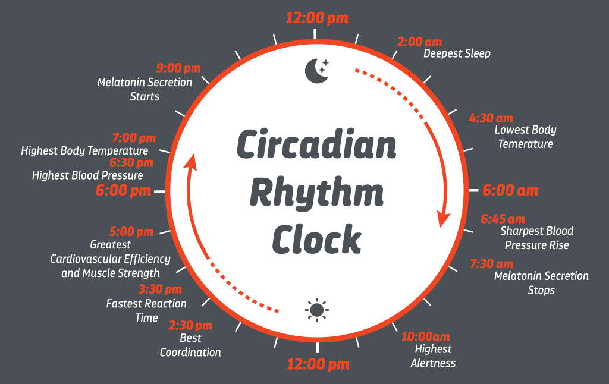
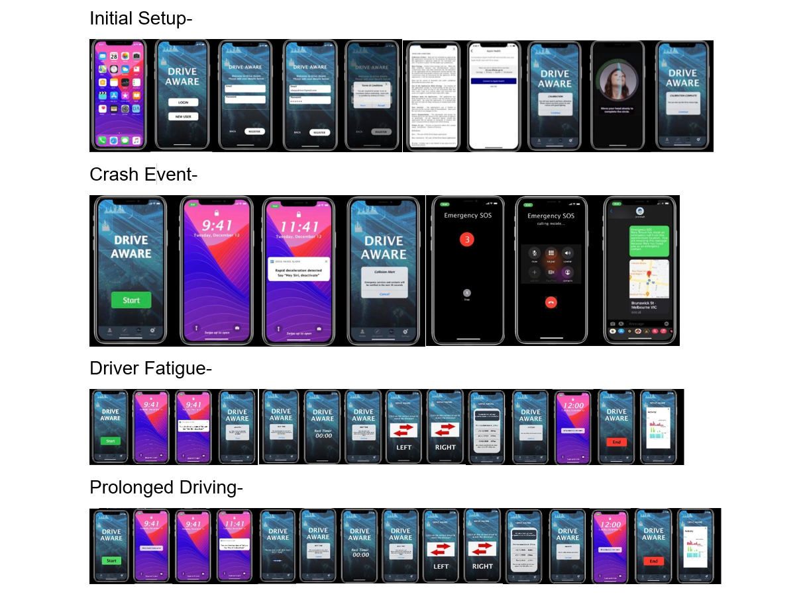
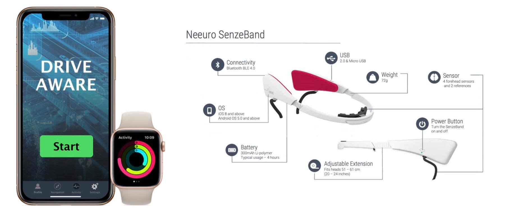
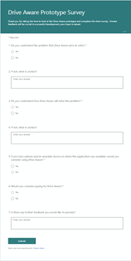

Our project, “Drive Aware”, involves the development of an iOS app with a corresponding Watch OS app that will monitor the biometrics of vehicle drivers. The hope is that in doing this the app will be able to alert them of the onset of fatigue caused by sustained periods of driving. The App will collect and analyse data from the various sensors built in since the Apple iPhone n11 and the Apple Watch 6. The front facing camera of the iPhone will be used to track and analyse the driver’s visual cues, searching for signs of driver fatigue. Using AI technology and deep learning, the Drive Aware App will be able to recognise and analyse visual cues such as changes in posture, blinking and yawning frequency. The corresponding watch application will monitor heart rate and actigraphy which will be used in conjunction with other data to assess the driver’s likely level of vigilance.
Alert systems will be in place in the event of a crash or in the event a driver is unresponsive to requested actions. The Drive Aware App will have the ability designated contacts and ultimately emergency services in such situations.
According to Budget Direct 1,195 people were killed in road-related deaths in 2019 (Insurance, Statistics and 2020, 2021). This equates to over 3 people per day. 36% of fatal crashes occurred in major cities and single vehicle accidents made up just under 50% of fatal crashes. Thankfully, there has been a decrease in road deaths since 1970 largely attributed to stricter road safety laws, measures put in place by transit authorities and safer vehicle standards (Insurance, Statistics and 2020, 2021). However, it is our belief that a single preventable fatality on our roads is one too many and it is this belief that inspired the development of the Drive Aware App.
Driver fatigue is ranked 4th out of the 5 most common causes of fatal vehicle accidents in Australia (‘Fatal Five’ Causes of Car Accidents in Australia, 2021) and is considered as dangerous as driving under the influence of alcohol and is much harder to detect than drunk driving with driver’s simply unaware of how their driving and cognitive abilities can be impaired when driving tired (Fisher et al. 2011). The graph below illustrates this, clearly showing that self-reporting of fatigue is not adequately reliable. Worryingly, research has also indicated that the standard two hour continuous driving limit is too high with people varying considerably in their safe limit and most showing considerably decreased concentration after 80 minutes (Ting et al. 2008).
Edited Graph taken from “The Process of Falling Asleep” (Ogilvie 2001) showing the variation in active and passive response (Ogilvie 1984) in comparison to Hori’s 9 hypnagogic EEG stages with the simplified standard sleep scoring (Hori, Hayashi & Tanaka 1998) as well as self-reporting and heart rate changes (Pivik & Busby 1996). For the purposes of this project, the heart rate changes in comparison to both self-reporting and active response times are particularly noteworthy. They demonstrate that drivers may be unaware of the decrease in their response time as tiredness progresses and that there may be alterations in heart rate before the driver is conscious that they have become fatigued.
It is no secret that our lives are increasingly reliant on modern technology. With this feeding our urge for instant gratification and the way in which we quickly access news and other information changing due to ownership of mobile phones approaching 80% of the Australian population, (Australia: smartphone users 2017-2025 | Statista, 2021). The way in which we interact with technology is changing. Furthermore, the use of wearable devices is becoming commonplace meaning people are increasingly used to having their biometrics monitored (Granwal 2020). Because of this, we believe there will be demand for an App which can track and monitor biometric vital signs associated with driver fatigue.
The Drive Aware App will be incorporating some of the top 14 mobile trends as identified by Quicksprout (14 Mobile Trends That Are Dominating 2021, 2021).
The central aim of the project is to produce a mobile application that monitors and analyses a driver’s biometrics and alerts them to signs of fatigue. Given the timeframe available to the group, the realistic aim of the group is to take this concept as far as possible towards a working prototype. To achieve this, the central aim can be broken down into smaller goals including:
Goal 1: The Development of a proof-of-concept prototype.
To fully understand and be able to explain how the Drive Aware App is to work, a prototype is required.
This will enable our team to demonstrate key functions of the App and show how these will operate while the App
is in use by the driver. The key functions we would like to demonstrate include an initial setup screen,
calibration of a visual monitoring system, a normal driving demonstration, and a crash event demonstration.
Initial setup screen - On initial setup of the Drive Aware App, the driver will need to complete their Profile. This step will ensure the driver has provided the necessary information to allow the Drive Aware App runs effectively. Essential profile information includes the drivers details already stored in the iPhone’s Health App (Wotton, 2021 - a). Health App information that will be confirmed includes; name, date of birth, sex, weight, height, blood type, and whether the driver is taking any medications that may affect their heart rate (Use the Health app on your iPhone or iPod touch, 2021).
Calibration of visual monitoring system - This will involve visual testing of the driver by asking them to perform a series of simple tasks. Tasks will include looking at the front facing camera, the driver will be prompted to blink several times, move their gaze up and down as well as left and right, and perform a simulation of yawning by opening and closing their mouth. (Wotton, 2021 - b).
Normal driving demonstration - During the normal course of driving the Drive Aware App will continually monitor the driver visually and biometrically, it will also collect and analyse the data from the various sensors which are built into the iPhone and Apple Watch. Data from the iPhone includes the accelerometer, GPS, timer, and camera. Apple Watch data will include the accelerometer, gyroscope, heart rate monitor, and GPS. (Wotton, 2021 - c)
Crash event demonstration - A crash event will be recognised by the Drive Aware App should there be a sudden change in data being collected by the accelerometer and GPS, (Apple Developer Documentation, 2021) for example a sudden change would include a rapid decrease in speed caused by a crash. Upon this event, the Drive Aware App will attempt to contact designated contacts through the iPhone and ultimately the emergency services if needed.
Goal 2: Demonstration of the intended data flow.
A data flow diagram (DFD) maps out the flow of information for any process or system. It uses defined
symbols such as rectangles, circles and arrows, plus short text labels. These show data inputs, outputs, storage
points and the routes between each destination. (What is a Data Flow Diagram, 2021). The data flow diagrams will
be used as a key artifact for this project with the information outlined being used as a base for the
demonstration of key functions of the Drive Aware App prototype. Data flow diagrams will be completed for the
following key functions, initial setup screen, calibration of visual monitoring system, normal driving
demonstration and crash event demonstration.
Goal 3: Planning of the code structure of the application.
Coding for the Drive Aware App will be completed using Apple native developer tools such as Swift UI in
conjunction with the suite of Apple developer technologies. As noted by Yu, creating code on native developer
tools offers a better user experience then using a cross platform solution to build a single app for both iOS
and Android devices (Yu, 2021). By focussing on building the Drive Aware App for iOS and Watch OS in the initial
stages, our team will concentrate on building more cohesive app at launch for a single platform.
Goal 4: Assessment of additional devices that will help in identifying driver fatigue.
Further discussions and possible implementation to occur regarding the benefits and wearability of an EEG
headband which will work in conjunction with the other planned sensors to monitor driver fatigue. EEG headband
signals are known to be a reliable indicator of fatigue and drowsiness; however, they have not been widely used
due to their size and restrictive moveability (Rohit et al., 2017). There has been significant advancements in
the technology which may make it feasible addition to the Drive Aware App.
Goal 5: Partner with a commercial entity – Car Insurance Company or Similar.
Although well beyond the scope of this assignment, to increase the user base of the service and strive for
continued growth, we will attempt to secure a commercial relationship with an insurance provider or a driving
association. The benefits in doing so would include being associated with a trusted and reputable brand which
would likely see the Drive Aware App considered in the same light. This could increase profitability as a
subscription payment model to end users of such a company could be implemented or a commercial agreement
considered directly with the company. There is precedence for the use of mobile applications as a tool for
insurance companies which is what inspired us to consider this avenue. Aviva, as part of its insurance operation
in the United Kingdom, incentivises some customers to use and application while driving that assesses the safety
of their driving. Should the application deem the driving to be of a certain standard, the customer may be
rewarded with reduced premiums (Aviva 2020; Baker 2016). Drive aware could perhaps be used in a similar way, to
reward drivers for their use of the app and for taking breaks when advised to thereby reducing risk for an
insurer and decreasing the chances of a traffic accident. Alternatively, for a fee, a licencing agreement could
be reached whereby Drive Aware could be offered as a free benefit to an insurer’s customers or the members of a
driving organisation.
The Drive Aware project started off as the Assignment 1 project Idea of Matthew Wotton: one of our team members. The original concept was to develop an application for a wearable device, the Apple Watch, and for the iPhone that would monitor drivers and alert them to signs of fatigue (Wotton 2021). This is a widely recognised problem for truck drivers, they work long hours which leads to exhaustion (Fatigue Management: What Truck Drivers Need To Know, 07/05/21) in turn creating a hazardous environment for other road users. (Fatal Heavy Vehicle Crashes Australia—Quarterly Bulletins, (07/05/21) Our group quickly became fond of polls as a way of coming to decisions and after a look at all the group’s Assignment 1 projects, Nicole organised a poll to decide which one we would like to work on together with Matthew’s coming out on top.
As commenced our research in Assignment 2, we received some valuable constructive criticism from Daniel, Waymo’s System Engineering Manager (Josevski 2021) Gerard conducted a literature review of scholarly articles relating to driver fatigue as well as the physiology and measurement of stages of the onset of sleep which concluded with recommendations on which biometrics may be worth measuring and why (See artefacts). This was re-enforced by research subsequently undertaken by Liljana. (Samson, 07/05/21)
After a team discussion, we decided our aim for the user market would be any vehicle driver, such as every day commuters who also suffer from fatigue ( Driver fatigue: why does driving make you tired?, 2021) It is well established that as a driver becomes relaxed during monotonous driving, and when there is no stimulus, the driver will become drowsy (Fisher et al. 2011). This can have fatal consequences. Because of this, another potential user of Drive Aware may be holiday makers on long road trips with their families, especially now with covid 19 putting severe restrictions on overseas travel (COVID-19 and the border Leaving Australia,07/05/21). This has prompted families to travel more within our country and to use caravans more, (Safe caravanning) [07/05/21]which are large and can be dangerous if the driver is not fully alert. Sadly, these situations are possible and can have severe consequences so, the drive aware app would be beneficial to these drivers too, and not just the professional driver.
We also decided, to begin with at least, on limiting the application’s accessibility to the iPhone and Apple Watch (Apple Watch User Guide) [07/05/21] and in future to consider developing it on Android with a corresponding smart watch. This would not restrict the user market in the long term and issues would be identified on a single platform rather than needing to alter its construction to accommodate both Android and iOS. Additionally, we believe that starting with Apple for our prototype will be simpler as two of our team members have Apple Watches and understand their use and functionality. (Apple Watch User Guide) [07/05/21]
We started off with a hand drawn sketch outlining basic functionality, indicating how the app should look when opened including pop ups allowing the accessibility of data gathered from the Health App and available on the iPhone. After some discussion and research, we decided that this should then be followed by a prototype developed with Figma. (Minds meeting minds is how great ideas meet the world) [07/05/21] The prototype will allow us to show our vision and enable us to present the idea to others.
The group believe that the components needed for the application’s operation should be easily accessible wearable smart technology and, initially at least, devices that the user currently owns. This enables the app to be interchanged to any vehicle as the equipment needed is neither cumbersome or inbuilt. This enables mobility and flexibility, also affordability compared to some similar technologies currently available offering driver monitoring such as Seeing Machines (Seeing Machines sees bright future for driver monitoring technology) [07/05/21]
The images above of the multiple rough drafts show the progress of the flow of the prototype before we started using Figma. Among other things, we had inspiration for the visual aspects of the activity of the biometrics, from looking at the health app on one of our iPhones. This inspired us to display daily statistics and have a line graph showing the length of the drive with the biometric levels. This information can also be displayed as weekly statistics showing a comparison of the wakefulness throughout the week. Once the app has the user details and you are logged in, we have decided to add an extra screen for users to agree to the terms and conditions. This was a result of assessing the risks associated with the application’s use as well as to limit liability (see Risks). Should user not agree to the terms: Drive Aware will not be available to assist them. After this, when the user presses start, the screen will go back to the user’s normal home screen and will have an indicator icon showing that the app is operating, this has been designed this way to minimise driver distraction. Another example of a function operating this way is the “personal hotspot” which, when one clicks on the menu section. The Data history will be stored in the app and will use the current technology used with the health app to gather and translate the user’s data. In the set-up stage of the Drive Aware App, the user will need to allow access to the Health App which will also allow access to the Medical ID which consists of the biometrics and emergency contacts.
The group proposes to use a similar technology to the facial recognition technology currently in smart phones such as the wire frame to determine the user’s facial distinctions. (About Face ID advanced technology) [07/05/21] This will also allow the app to perceive the eyes as they appear when opened, to then be able to monitor the drivers eye movements when the app is in use and to enable warnings when there is a detection of fatigue occurring. This will also be in the initial use of the app in the set-up stage of the Drive Aware App, the user will need to allow access to the Health App which includes access to Medical ID including biometrics and emergency contacts.
The reaction test game was proposed as a solution to the problems caused by drivers lack of insight into their own fatigue levels (Ting et al. 2008). The original game involved colour selection time to ascertain reaction time (see image below). After some thought we have considered that we would run into some obstacles with the reaction test game. We thought by changing it from the assorted colours on the pallet we initially had in A2, to something more shape based as the colour palette are too like one another and might confuse some users if they cannot identify the correct shade stated. The game would be especially challenging for colour blind people. (What Do Colour blind People See?) [07/05/21] Because of the issues raised above, the game was altered. The current design involves the user pressing on a left or right arrow when prompted. The player’s reaction time is tested three times and if the test is failed by the driver, they will be advised to rest for longer before trying the game again and, if they pass the test, continuing their journey.
We will reconsider the game and make it more complex as the app development progresses. However, we have agreed that for the prototype, it should retain this format. Future game ideas include a simple driving simulator which presents hazards for the player to avoid to assess the alertness of the driver. A game such as that which would resonate with the purpose of Drive Aware would be ideal.
The application will run in the background on the device once it has been activated and then will continue to operate through the smart watch measuring biometrics (David R. Samson,07/05/21) thus preventing the iPhone or Apple watch to be of a distraction to the driver. We considered a coloured indicator, for instance green, at the top of the screen indicating that the app is in fact operating while not causing a distraction. For the application to function, the iPhone needs to be securely mounted on the dashboard in sight of the driver’s eyes to enable the forward-facing camera to function and detect movements. The camera will monitor the length of time the user has closed their eyes whether blinking or otherwise. An extended blink can indicate that a driver is becoming tired (Fisher et al. 2011). Securing the device in this manner is also recommended by Vic Roads (Mobile phones, technology & driving, 19 April 2021) [06/05/21] who stipulate that all driver’s aids should be secured and not touched while driving. The device is recommended to be plugged in to charge to while the app is running, rather than drain the battery and to minimise disruptions. (Power & Cables) [07/05/21] When the app is further developed, the front facing camera will also monitor other fatigue cues such as yawning or dropping of the head.
The accelerometer and gyroscope will also be able to determine whether the driver is becoming tired by comparing the normal movements of a person when they are awake and comparing them with reduced movements which may indicate that they are fatigued so sleep may be imminent (Sleep Drive and Circadian Rhythm) [07/05/21] This will trigger an alarm and the driver will need to vocally deactivate by saying “Hey Siri, deactivate”. Following deactivation, the driver will be advised to make a stop where safe to do so and play the reaction time game to establish whether they are alert enough to resume driving. The functions of the app are to include monitoring biometrics through the Apple Watch. Key to this is heart rate, which slows down when we relax, and in turn can indicate the onset of sleep. (How does sleep affect your heart rate? POSTED JANUARY 29, 2021) [07/05/21] ). The watch monitors hand and arm movements indicating a relaxed driver which can indicate drowsiness. Additionally, the gyroscope also determines the time the user has been awake and will enable the app to evaluate the fatigue level of the driver. Irrespective of the measurements taken, the app will alarm to have a rest after the standard of 2 hours as a precaution. (Driving tired) [17/05/21]
The phone’s internal camera, along with the gyroscope, accelerometer, and the Apple watches heart rate monitor, will work together and gather data to predict a few scenarios. These are the drivers journey exceeding the time limit of 2 hours, a potential collision, and biometrics to predict fatigue cues. All these factors will then issue a warning in the form of an alarm. If the alarm is not verbally deactivated, (Mobile phones, technology & driving, 19 April 2021) [06/05/21] the emergency contact and emergency services will be notified of a potential collision. If the driver does deactivate the alarm, Drive Aware will prompt the driver to stop the vehicle. Then the Drive Aware app will suggest conducting the reaction test game described above.
Further developments we have discussed to predict fatigue while driving include the use of an EEG monitoring device applied to the driver’s head. These now exist in the form of a headband or cap (Neuroscience - Sleep Cycle EEG, Jul 18, 2016) [06/05/21] . This would allow a more accurate reading, measuring the point at which a driver may enter different stages of the wake-sleep state. It was suggested that not all smart phone users have smart watches but would still benefits from the accessibility and affordability of using this app compared to the inbuilt technology stated previously in assignment 2 such as “ Seeing Machines” as an example. So, we believe that the small costs associated in purchasing these wearables to help determine a driver’s sleep state may be considered reasonable to users. Hopefully this will create safer roads for the people we love.
Though, in Assignment 2 we briefly touched on the EEG wearable bands for driver monitoring. While for Assignment 3 we felt extending the scope to include this would be too challenging, we believe developing a working prototype and linking it with the EEG band would be well worth considering. Gerard, a member of the DAT Team, contacted Neeuro a manufacturer of EEG headbands as they were looking for development partners. This lead to a meeting to discuss the Drive Aware app concept and the potential for collaboration with them. The meeting proved to be very promising and using their headband with the Drive Aware app appears perfectly feasible once it is developed. Their bands connect to mobile devices via Bluetooth for both iOS and Android which would work well with our initial Apple development and for future developments with Android. They also offer their own SDK for app developers to work with. The EEG band would assist in detecting fatigue levels by discovering whether the brain waves emitted are either Beta waves or Alpha waves. Neuronal Mechanisms for Sleep/Wake Regulation and Modulatory Drive, Published: 05 December 2017, [03/05/21] Beta brain waves occur when a person is awake and alert. The Alpha brain waves occur when the person is awake but in a very relaxed state and falling asleep. EEG Waveforms Building Blocks of Sleep Staging We hope to be able to prevent any collision before it gets to the following stage of Theta brain waves which is the first stage of sleep as shown on the image below to the left. An example of the wearable EEG head device is to the right. (Introduction to EEG, Aug 26, 2014) [06/05/21]
As with all systems, there are elements that could go wrong, such as the driver disobeying the app’s recommendations of driving after a failed test. This could cause a collision. The user of the app should choose to apply all the rules to help keep them safe willingly and not go against recommended usage. To mitigate this, we decided it was necessary for the app to have terms and conditions even considered at this stage of development. Once the user opens the App and logs in, the user is required to agree to the terms and conditions of the app or they will be unable to make use of it.
This app is appropriate for usage of a daily commuter driving to and from work, late nights, or early mornings. However, when we are most tired it is likely to be of most use and this is often indicated through our Circadian rhythm. What is the Circadian Rhythm? [Y. Smith] What is Circadian Rhythm (And Why Your Circadian Clock is Important)[Layla] In future, the application will monitor its user’s circadian rhythm closely and calibrate warning thresholds accordingly.
Having started with the hand drawn sketch and progressing more into the functionality of the app, we considered the app operating with just the iPhone monitoring the eyes and head movements alone in the case that the user does not own an Apple Watch. Of course, this will not be as accurate, but the driver may still benefit from some of the app’s functions. While using the app in this way is not optimal, it will still give some readings and data will be taken to deliver some of the benefits of driver monitoring.
From this, we have progressed to a proof-of-concept prototype. The images below show what would happen in the three different scenarios: a crash event, driver fatigue, or prolonged period of driving (See more in Artefacts).
The DAT Team decided not to assign specific roles to team members during the project. Our reasoning was that we as a group do not currently have the experience or knowledge to program an app of the complexity that we wish to achieve. We have instead decided to use our experience in other areas to develop a prototype of the app. Tasks have been assigned based on what experience or exposure, if any, each member has had to different roles that will assist the group in creating our prototype. In practice, this has worked well as the group has a varied background and skill set but have all been willing to work hard and accommodate the others. For example, Nicole has some experience using Figma, so she will take the lead on creating the wireframing for our prototype and with Lilyana keen to gain experience in this area she offered to spend time working with her. Chris has some experience with video editing so he will be responsible for editing our video presentation. Naturally, Matthew continued to work on the development of the Drive aware project during A2 and Gerard, having a healthcare background, researched information on which biometrics should be measured and how. Other tasks, such as creating our storyboard for the video presentation, are performed by the entire group, and refined as we figure out what will provide the best outcome for our project. In the case that we can’t reach a definitive resolution, we (usually Nicole) setup a poll in MS Teams and let democracy dictate our course of action.
The application ‘Drive Aware’ that was chosen for Assignment 2 submission - has the following
functionalities.
There are 4 types of monitoring suggested in the application. Some can be tracked using the iPhone and some
by the Apple Watch*. Accordingly, both are recommended assessment of fatigue.
*As technology improves and more sensors are included in iPhones and Apple watch devices, the monitoring level can increase. See future development for more information.
The alerts for each type of monitored outcome will differ with individual alert text and pathways. These are explained below.
The scope for Assignment 3 will provide a more in-depth plan on how to bring the application to life as well as
a prototype for demonstration.
The decision to use a prototype as opposed to programming an Apple application was made due to time constraints
and level of expertise in the Apple development area.
A prototype will allow us to display our vision to prospective investors and be used for basic testing.
In order for the Prototype to flow in the intended way for demonstration, we have split the prototypes into 3
links. More information can be found in artefacts.
The scope of the project also extends to basic testing (see testing)
The tools and technologies we would need to possess to develop the Drive Aware app on an iOS are outlined below. Firstly, the XCode developmental tool, this is the platform on which we would write our code using the Swift Programming Language (Swift 5.4) and build our user interface (UI). We would require database development to be able to store the user’s details and data gathered. This could be done with SDK (Software Development Kit) and API (Application Programming Interface). The SPC (software processing control) will allow us to input the user’s personal data and CLI (Command Line Interface) allows the input of specific details.
A GUI- graphical user interface will allow the reaction time game to function and URI- universal resource identifiers URI- universal resource identifiers allows the app to call emergency services if required. If Drive Aware were to be a native app, it would offer a better UX- user experience by having quicker navigation and enhanced security of the user’s data. Also being a native app, will allow the camera to be accessed which in turn can be used to monitor the driver’s vital cues with the forward-facing lens.
While beyond the scope of Assignment 3, as suggested in A2 (Assignment 2), the use an EEG (Electroencephalography) wearable device, would help monitor if sleep were to occur by measuring the electrical signals of the brain. The waves that the EEG band will discover when a person is alert are Beta waves. When a person is in a tired and almost falling asleep state, the EEG shows Alpha waves. This in conjunction with the Apple Watch and iPhone measuring the biometrics would provide a more accurate reading and perception of whether the driver is showing signs of drowsiness or imminent sleep. The EEG is a very promising future addition but at this stage, while we are exploring the benefits, we want to keep the initial operation simple. Accordingly, we will not be including this wearable technology in the first working prototype.
We need to create icons for use in our app or alternatively we could use the icon shop which is open source for our user interface-UI. Figma has been selected to develop our proof-of-concept prototype as one of our valued team members, Nicole Clarke, has experience using it. While not relevant to functionality, if we wanted to use Apple fonts, we would require purchasing a licence.
To create an Apple iOS app, one can use any Mac device and install the XCode programme which uses the swift coding language. We would need an Apple mac to work on for the iOSversion and have it updated to version iOS 14. An iPhone 6 and above and Apple watch will also be needed to test the app, after the app is complete. Should it be decided to include the use of the EEG headband after the initial testing phase, an Apple Watch and the EEG headwear Neeuro-SenzeBand,, will be used together to create a more accurate reading. The headwear will work via Bluetooth and operates on iOS and Android for future developments. In our case we are choosing Apple products to begin with. When creating the Android version Java Script will be used. . To summarise: iMac or MacBook will be used as the Software Developers interface to design and code the App. iPhone will be used to test the functionality of the App during the testing phase. The Apple Watch will be used to test the functionality of the App during the testing phase.
One team member, Christopher Smith, has some experience in video editing with Davinci Resolve and iMovie which will come in handy when we need to complete Assignment 5. He also has some experience with UI/UX app design. Furthermore, he has some experience with UI/UX app design. Furthermore, he has some experience with React -Java Script framework that makes cross platform smartphone apps. He also constructed most of a Minesweeper clone with a colleague in his past. Liljana has some experience with WIX in web design and photo editing using the Lightroom app.
The native Swift UI (user interface) which is used for building Apple apps. The developer tools below are used and integrated through Swift. The Create ML machine learning tool, this will be used to train the app on how to recognise a driver yawning, the rate of blinking and attentiveness. Core Motion reports motion from the accelerometers and gyroscopes, and from the pedometer, magnetometer, and barometer. Core Location provides services that determine a device’s geographic location, altitude, and orientation used for GPS. User-facing notifications, communicate information to users of the app, regardless of whether the app is running on the user's device. The Push Kit framework supports specialized notifications for updating your Watch OS (Operating System) complications. Push Kit notifications launch the app and give it time to respond. Both Push Kit and User Notifications use the Apple Push Notification service (APNs) to deliver push notifications to the user device.
As the system gathers information using various sensors on a device, Sensor Kit enables an app to access selected raw data, that the device obtains from a sensor Health Kit and provides a central repository for health and fitness data on an iPhone and Apple Watch. With the user’s permission, apps communicate with the Health Kit store to access and share their data. The System Configuration framework helps determine the reachability of the device, to see if the Wi-Fi or cell connectivity are active. The Watch Connectivity framework transfers data between iOS apps and the Watch Kit extension of a paired Watch OS app. The Watch Kit framework provides the infrastructure including an extension that manages background tasks such as, extended runtime sessions and Siri intents which will operate with our vocal deactivation of alarms.
Core ML (Machine Learning) will be used to integrate machine learning models into our app. Apps use Core ML APIs (Application Programming Interfaces) and user data to make predictions, and to train or fine-tune models, all on the user’s device. This can help the drive Aware app operate more efficiently.
In the event of a crash, the iPhones and Apple watches GPS can be used to help locate a driver if they have become separated from their vehicle. The accelerometer is used to measure the iPhones speed so then together with the Gyroscope it can gatherer the Information to determine if a driver’s watch wearing arm is active for example holding on to the steering wheel.
These technologies will work together as follows: the forward-facing camera will be monitoring the driver's visual cues and in conjunction with the AI(Artificial Intelligence) technology of facial recognition and the wire frame will help determine whether the driver's facial expressions are showing signs of fatigue. This could be shown with yawning and slower eye movements. AV Cam allows the App to capture photos with depth data and record video using the front and rear iPhone cameras. We believe this would help in getting the camera to detect visual cues. The Apple Watch Heart Rate Monitor will be used to monitor a driver’s heart rate while driving which will help determine the relaxed state of the user. Health Kit provides a central repository for health and fitness data on iPhone and Apple Watch. With the user’s permission, apps communicate with the Health Kit store to access and share this data. The heart rate monitor reports to this and we would access the data from the Health Kit.
XCode consists of a suite of tools, from creating your app to testing, optimizing, and submitting it to the App Store. iMac or MacBook will be used to design and code the App. Swift ensures your code is fast and efficient and safe for the user. iPhone and Apple watch will be used to test the functionality of the App during the testing phase. If we have access to the EEG head device once the app has been created, we could also test to see if the accuracy is elevated. TestFlight makes it easy to invite users to test your apps and collect valuable feedback before releasing your apps on the App Store. You can invite up to 10,000 testers using just their email address or by sharing a public link. The App Store Connect API is a REST API that enables the automation of actions you take in App Store Connect. The App Store is a safe and trusted place for customers to discover apps, and a fantastic opportunity for developers to deliver apps and services across iPhone, iPad, Mac, Apple TV, and Apple Watch.
As the scope of this stage of the project is limited to the production of a proof-of-concept prototype rather than a working prototype, testing of the product will focus on user understanding and interaction. There is not a specific target market for the application in terms of age, gender or cultural background so it follows that testing should be conducted on as wide a demographic as possible, excluding only those under the legal driving age. Testing at this stage will remain relatively simple, the subjects will be asked to view the prototype and provide in indication of their understanding of what the product will do and what each screen that is displayed will do and from what they can see how they should navigate through the application. The test subjects will also be asked whether they would consider using the application once developed and if so, under what conditions. Testing can be considered successful at this stage if users are clear about what the application proposes to do, and they state that they would make use of the application. The testing of the proof-of-concept prototype will also aim to ascertain whether subjects would consider paying for the use Drive Aware as this may help determine the way in which the application generates income.
A brief survey, developed to implement the above, was designed and team members requested that fiends and family complete it. The survey ascertained whether the participants understood the purpose of the application, how it would operate, whether they would use it and if they would consider paying for it.
Although the sample size was small and the participants were known to the team, the results of the survey were encouraging. 100% of respondents suggested that they understood the problem that the application was aiming to solve and how it proposed to solve it. Most participants indicated they would use the application, those that did not commented that they did not have any devices turned on while driving. The survey suggests that 50% of people will consider paying for the application which may be useful when determining whether to charge for the app, look for advertising income or attempt to align with an insurer or motoring association.
Additional testing, if feasible, should include the use of the Apple iWatch ascertain whether the discernible variations in heart rate at the onset of sleep(Ogilvie 2001) are observable using the watch. This can be carried out independently of the direct prototype testing, asking subjects with the device to wear it when falling asleep and submit their heart rate data. Ideally, this would be done with an EEG in place to correlate the stage of sleep with the heart rate however this is not practical.
After a working prototype is developed, testing can progress to an applied stage. As with the proof-of-concept testing, as the application is being designed with all drivers in mind and accordingly, test users should be as varied as possible. Ideally, testing should include subjects who vary in age, ethnicity, weight, and gender. Although no specific variation in the biometrics is being anticipated, variations may be observed either at this stage or while ascertaining the suitability of the iWatch’s heart rate monitor which would allow for design changes pre-launch.
| Week# | Chris | Gerard | Liljana | Matt | Nicole |
|---|---|---|---|---|---|
| 1 | During this week the team familiarised themselves with brief for A3. After our Wednesday
meeting we decided each team member would select two sections from the Project Plan & Overview to work on.
These sections are detailed on the next row
Storyboard submission due end of week |
||||
|
Roles
Timeframe Storyboard Contribution |
Testing
Risks Storyboard Contribution |
Plan and Progress
Tools & Technologies Storyboard Contribution |
Scope & Limits
Group Processes & Communications Storyboard Contribution |
Overview
Aims Storyboard Contribution |
|
| 2 |
Define the screens required to generate a prototype in Figma or similar
Prototype Design
Aiming to have 90% of Project Plan completed by start of week 2 |
||||
|
Roles
Review Liljana’s Tools & Technologies Contribution Timeframe |
Review Liljana’s Tools & Technologies Contribution |
Review Liljana’s Tools & Technologies Contribution
UI/UX design Wireframing |
Review Liljana’s Tools & Technologies Contribution
Team Profile |
Review Liljana’s Tools & Technologies Contribution
Skills & Jobs UI/UX design Wireframing |
|
| 3 | Contribute to script and ideas for presentation video | ||||
| Record Script for presentation | Record Script for presentation | Record Script for presentation | Record Script for presentation | Record Script for presentation | |
| 3 |
Rubric Fulfilment
|
||||
|
Build Website
Edit Presentation Video |
Write Script
Review and edit A3 content |
Write Script |
Write Script
UI/UX design Wireframing |
Write Script | |
| 3 |
Review Content and Prototype
Create PDF for submission Feedback & Group Reflection |
||||
| Edit Presentation Video | Review and edit A3 content | ||||
| 6 | Development
|
||||
| 7 | Development
|
||||
| 8 | Development
|
||||
| 9 | Development
|
||||
| 10 | Development
|
||||
| 11 | Development
|
||||
| 12 | Development
|
||||
| 13 | Development
|
||||
| 14 | Development
|
||||
| 15 | Launch App | ||||
For Assignment 2, we did have another team member who was unresponsive to not only Microsoft Teams
communication but also to direct emails via Canvas. This was addressed by making Anthony our Teacher and David
our Tutor aware. We also removed the member from Teams.
The remaining 5 members of the DAT Team are very proactive and communicative. This has made the
coordination of both Assignment 2 and 3 projects successful.
All members have notifications on for the Microsoft Teams group and therefore are very responsive to
chat discussions, meeting invites and requests.
As all team members have different responsibilities and commitments at different times of the day. We
have found that it is not always convenient to chat at the same time. We have navigated this with all members
putting in the effort to regularly check regularly the chats.
Our team has agreed to twice weekly meetings so even if we have been busy with other commitments all
team members have made the effort to attend in most cases.